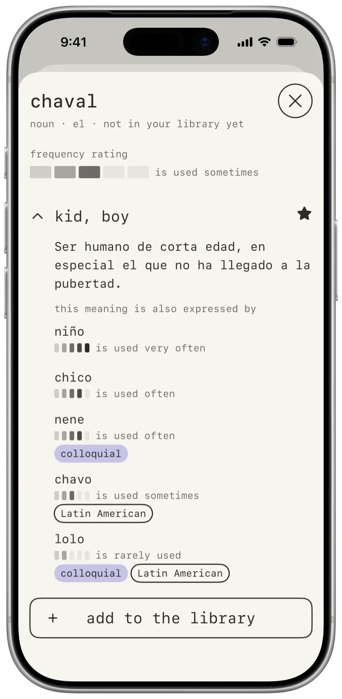
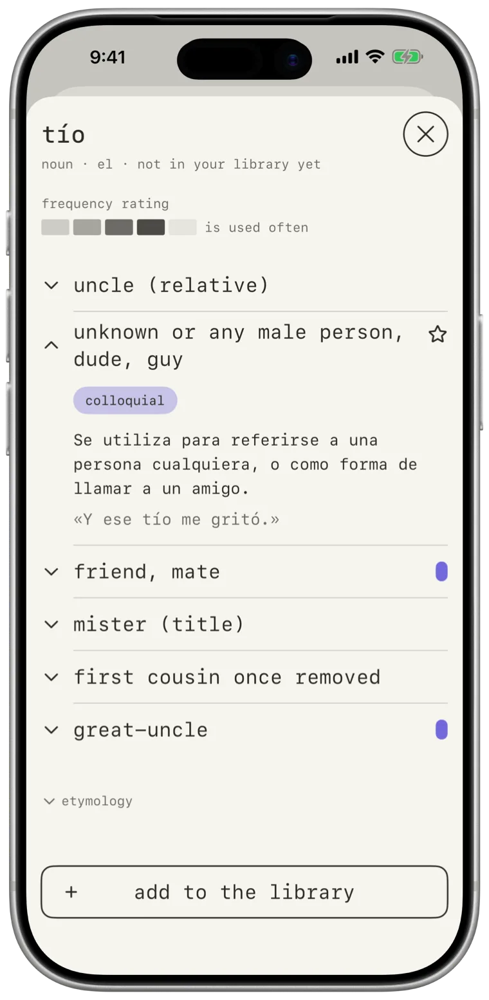
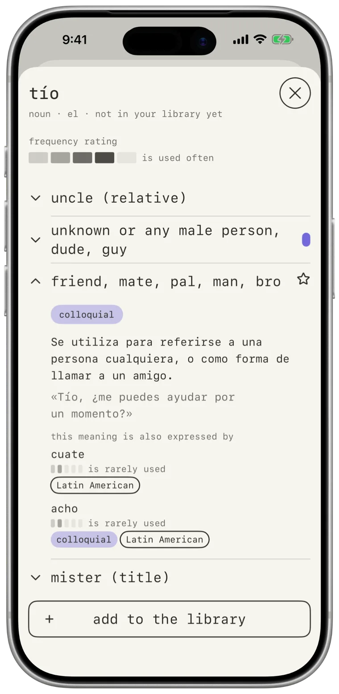
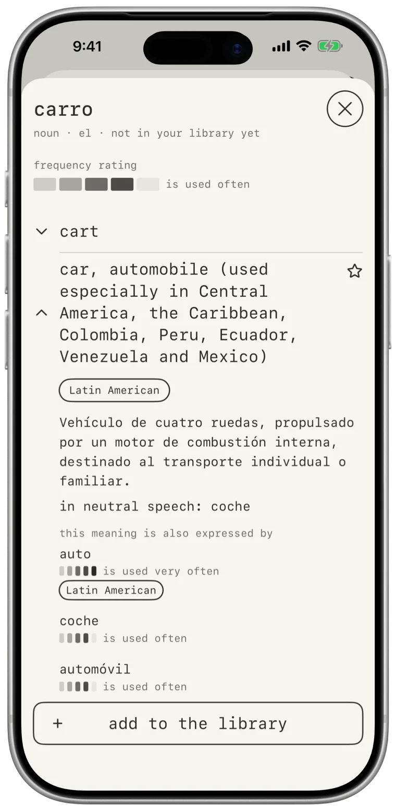
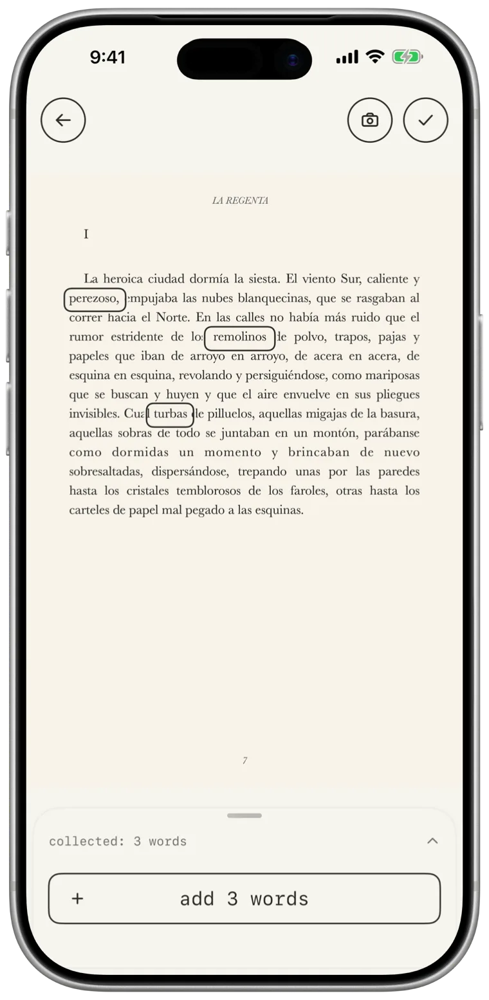
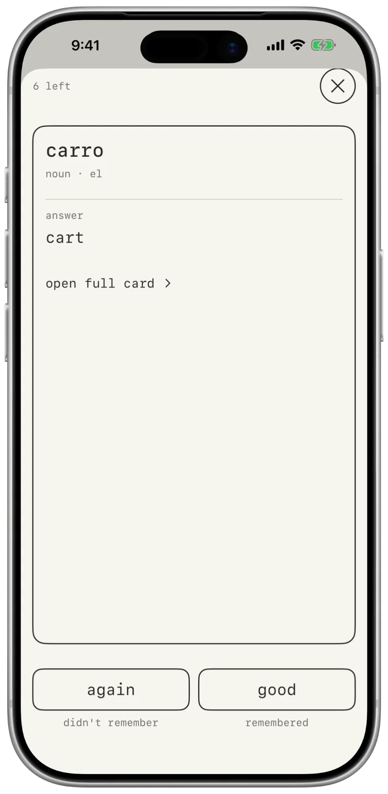
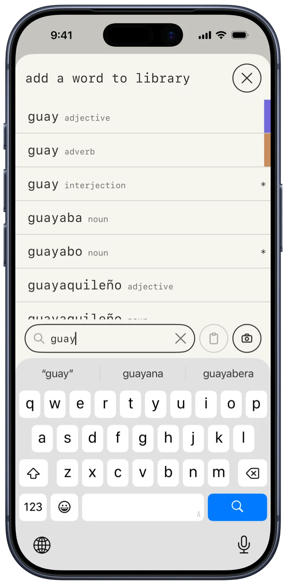

Everything open
Nothing is charged and nothing renews when the 14 days end.
Spain Spanish dictionary · iPhone
What a word means and how it lands: casual, slang, rude, old-fashioned, or not said in Spain at all. Words you look up come back for review just before you’d forget them.
For iPhone · everything open for 14 days · no sign-up

Who it’s for
Also handy if you work with Spanish colleagues, are preparing for DELE C1 or C2, or have a Spanish partner or in-laws.
How a word lands
The Spanish in Spain isn’t the Spanish from your course. Tío means uncle — and also “dude.” Currar means “to work.” Just don’t say it in a job interview.
Every meaning is listed separately. Most are everyday, neutral Spanish and need no label; where a meaning has a tone, it’s marked: colloquial, slang, vulgar / taboo, derogatory, children’s speech, literary / formal, rare / dated.
Vulgar or taboo meanings say so. If a word is harmless in Spain but rude in parts of Latin America, you see “careful: regional trap” — coger is one.


Spain vs Latin America
léxito flags meanings used in Latin America, not Spain — and often gives the word to use instead: carro → coche, celular → móvil, jugo → zumo.
How often a word is actually used, its gender and, where known, its origin. More than 100,000 entries, built around the Spanish of Spain.

Get the word without leaving the page

Keep it

Offline and private
The whole dictionary lives on your iPhone, so it works on a plane, a train or the metro with no connection.
Pages you photograph and text you share are processed on your iPhone. Only your word library syncs, through your own iCloud. No sign-up, no ads.

Free and paid
Nothing is charged and nothing renews when the 14 days end.
Keep up to 150 words for free. When you reach 150, nothing is locked: review, search, lists, the widget and export keep working — you just can’t add new words.
A yearly subscription or a one-time lifetime purchase. The dictionary is updated every three months, and every update is included.
No. It’s a dictionary for what you already read, plus review of the words you looked up. Best from about B1–B2.
No. No sign-up, no ads. The whole dictionary lives on your iPhone.
Yes, if iCloud is on: only your word library syncs, through your own iCloud. You can export it at any time.
Nothing is charged and nothing renews. You keep up to 150 words for free; léxito unlimited removes the limit.
Meanings marked vulgar / taboo or derogatory say so right in the entry. If a word is fine in Spain but rude in parts of Latin America, you’ll see “careful: regional trap” — coger is the classic example.
Most labels come from Wiktionary (English and Spanish), brought into one RAE-style list. The regional-trap and false-friend warnings and the “in neutral speech” hints are added by the léxito team.
No. The norm is the Spanish of Spain. Latin American meanings are flagged, often with the word to use in Spain.
Yes. The whole dictionary lives on your iPhone.
Yes: type the word, photograph a page of a paper book, pick a screenshot or photo, share selected text from Safari or another app that shares text, or copy and paste.
Every meaning has an English translation. Most common words also have a Spanish definition. There is no Russian or other language.
Yes: about 1.19 million forms (cogí → coger, riéndose → reír) and about 17,900 multi-word expressions (echo de menos → echar de menos). Misspellings are forgiven.
Yes — type the word you heard. Misspellings are forgiven.
iPhone with iOS 26.5 or later. There is no iPad or Android version.
108,058 entries and 147,819 meanings, built on Wiktionary data (CC BY-SA 4.0), with the Spanish of Spain as the norm.
Works offline. No sign-up.